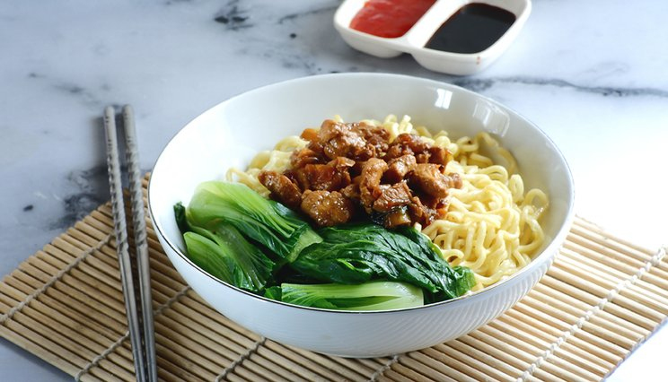

Resep Mie Ayam


Tidak dipungkiri lagi bahwa mie ayam merupakan salah satu makanan favorit orang Indonesia. Tetapi bagaimana cara membuatnya ? Apa aja sih resepnya ? Mari simak caranya dibawah ini!
Resepnya
- Mie telur yang biasa utk mie ayam
- 1 ekor ayam (pisahkan antara daging, tulang, kulit)
- Kecap ikan
- 1 bonggol bawang putih cincang
- 1 bawang bombay cincang
- 2 sdm saos tiram
- 1 sdt kecap asin
- 1 sdm kecap manis
- 1/2 sdt merica bubuk
- 200 ml air
- secukupnya Garam, gula, kaldu jamur
Bahan Topping :
Bahan Kuah :
- 1.5 liter air
- 2 sdm minyak bawang
- Ayam bagian tulang
- Kucay
- secukupnya Garam, merica, penyedap rasa
Bahan Minyak Bawang :
- Kulit ayam
- 1 bonggol bawa putih cincang
- 200 ml Minyak goreng
Bahan Pelengkap :
- Sawi
- Tauge
- Daun Bawang
Langkah
- Cara membuat toping: tumis bawang putih + bombay hingga harum. Masukan daging ayam cincang, aduk hingga berubah warna. Masukan saos tiram, kecap asin, kecap manis, merica, garam. Aduk hingga tercampur rata. Lalu tuangkan air tunggu hingga mendidih dan matikan api.
- Cara membuat minyak bawang: panaskan minyak (gunakan banyak minyak), goreng kulit ayam hingga kering. Sisihkan. Lalu goreng bawang putih menggunakan minyak bekas menggoreng kulit hingga kecoklatan dan sisihkan. Apabilan minyak bekas goreng bawang putih sudah dingin, masukan kembali 1 sdm bawang putih yang sudah digoreng tadi.
- Cara membuat kuah: rebus air hingga mendidih, masukan tulang ayam. Buang buihnya. Rebus sekitar 30 menit dengan api kecil. Setelah itu masukan 1sdm bawang putih goreng sisa pembuatan minyak bawang, kucay, garam, merica, penyedap rasa. Koreksi rasa
- Cara penyajian: taruh mie yang sudah direbus. Beri 1.5 sdm minyak bawang, sedikit kecap ikan, kecap manis (sesuai selera), garam, penyedap rasa. Aduk hingga tercampur rata. Beri topingnya dan tambahkan sawi, tauge dan daun bawang. Untuk kaldu bisa ditempatkan terpisah.